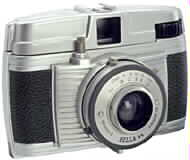

The first construction workers on Mars may not need hardhats.
NASA researchers successfully demonstrated the first use of multiple rovers that work tightly in sync to perform tasks such as coordinated grasping, lifting and moving of an extended payload, while navigating through obstacles on natural terrain.
"The Robotic Work Crew behaves a lot like its human counterpart might during a home construction project. Consider the challenge two people face when transporting a long, heavy board through a busy worksite," said Dr. Paul Schenker, supervisor of the Mechanical and Robotics Technologies Group and principal investigator for the project at NASA's Jet Propulsion Laboratory, Pasadena, Calif.
"Each person alone, or in this case each rover, has a variety of behaviors for how to carry smaller things," Schenker explained. "The trick is to combine such individual behaviors to safely carry and manipulate bigger things. The rovers must share the workload and thinking, exchange important sensory cues and quickly comply with each others' motions."
During outdoor tests near JPL, in which the deployment of a solar power station was simulated, two such cooperating rovers autonomously approached, gripped and carried a 2.5-meter (8-foot) long container over distances of more than 50 meters (164 feet).
The Robotic Work Crew can traverse uneven, hazardous terrain. The crew visually detects and tracks its goal, identifies nearby objects in its path, and works collectively to avoid obstacles in its path. Throughout this process, the robots constantly update each other about payload forces and motions as felt at their respective grippers. If the beam is slipping, the rovers collectively sense the problem and compensate.
New software called Control Architecture for Multi-robot Planetary Outposts is the shared brain that commands the team of rovers. "The two robots tightly coordinate their individual sensory and control behaviors in an uncertain, fast changing environment to accomplish a common goal," said Dr. Terry Huntsberger, project system engineer at JPL, who along with his colleague Dr. Paolo Pirjanian, led the development of the new control software.
"The robot team robustly fuses this information into a bigger picture, coming up with a best cooperative control solution," Huntsberger continued. "We can easily add new behaviors and additional robots to the system. New behaviors can be simple or more complex, with some behaviors building on top of numerous others already in place."
The JPL researchers say the rovers function much like a construction crew without a foreman. They note that once the system has been programmed with basic behaviors and coordination models, it is a truly distributed and autonomous intelligence across the robot team that gets the job done, responding to situations of the minute.
"Mars is hundreds of millions of miles from earth; we can hardly predict every scenario the rovers may encounter or foresee every rock and hill," said Schenker. "But, it is possible to give two or more rovers a set of instinctively reactive behaviors, a shared network of sensing and control, and a democratic decision-making process that enables them to decide the best action strategies. Call it a case of robots networking for success."
Although work on the Robotic Work Crew is in the early stages, the underlying multi-robot cooperation technologies appear essential to building outposts for a sustained human and/or robotic presence on Mars and the creation of large surface science networks. The software and technical approach also has promise for future robotic assembly and maintenance of spacecraft in orbit, such as the deployment of large optical structures or power stations, as well as setting up camp on Mars before humans arrive and supporting their work thereafter. December 1, 2001 
The second year of the NREC's First Lego League tournament, with over 60 teams competing and more than 600 people attending.
March 5, 2001
We moved into our new lab! Room 466, Benedum Hall.
December 2, 2000
The NREC hosted a State Robotics Championship. The First Lego League tournament is part of a national tournament for middle school age kids. There were teams competing from PA, NJ, and NY, with approximately 170 middle school age kids representing 20 teams. The tournament began around 9:00 A.M. We were there helping out, from 8:30 a.m. to around 3 p.m.
Last updated: